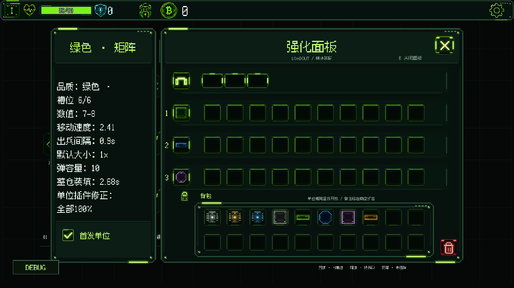
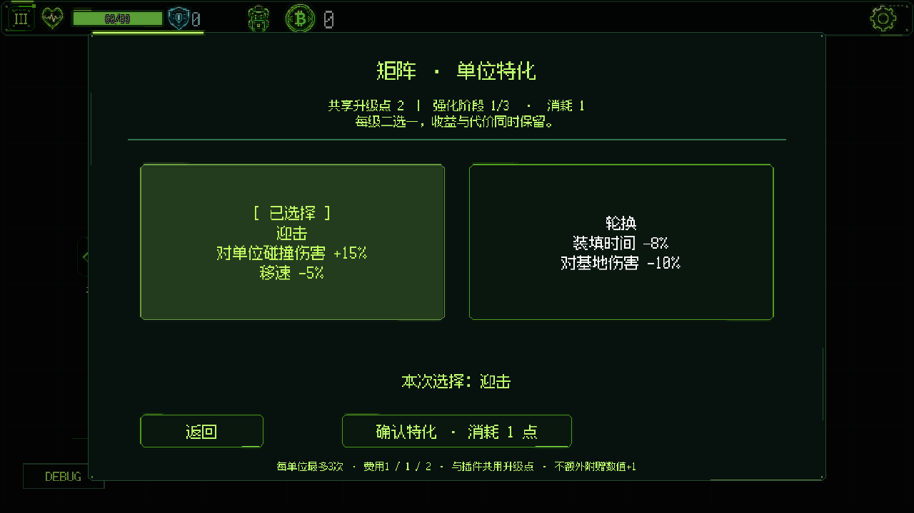
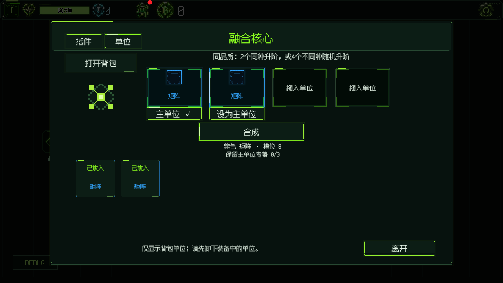
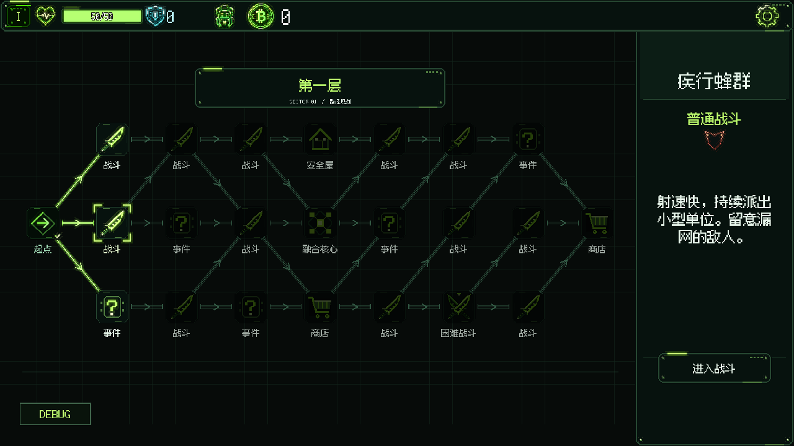
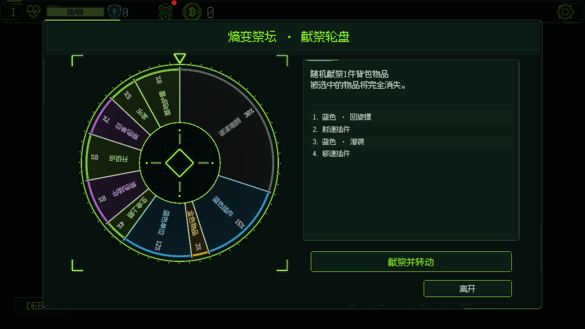

品质决定基础，专精决定取舍
13 种友方单位用形状区分，白、绿、蓝、紫、金表示品质。品质影响基础能力与插件槽位；每个单位有三级二选一专精，用共享升级点决定优先培养谁。
GEOMETRY DUAL / UNITY 2D
让弹幕成为军队，
让构筑决定攻防。
Roguelite 策略战斗 · 从核心规则、成长系统到课堂试玩迭代
《几何对决》是一款以“发射单位”代替直接射击的 Roguelite 策略战斗原型。玩家横移发射门，在三种已装备单位之间切换，让自己的弹幕拦截对手、穿过战场并击破基地。
一发弹药既是进攻资源，也是可被抵消的防线。高值单体和低值密集弹幕因此有不同的攻防收益。
战斗不是单纯堆输出：移动决定攻击线路，切换决定出兵类型，弹仓与整仓装填决定火力窗口。射速、移动速度、弹量和单位数值共同塑造构筑表现。
13 种友方单位用形状区分，白、绿、蓝、紫、金表示品质。品质影响基础能力与插件槽位；每个单位有三级二选一专精，用共享升级点决定优先培养谁。
燃烧、路径痕迹、残骸、单位炮塔和强化门等插件形成不同组合。设计时逐项校对母体、分裂子弹、多弹齐射与回旋镖的继承边界。


融合核心把重复获取转成成长机会：两件同类同品质材料定向升阶，四件同品质不同类别材料随机升阶。同种单位可选择主材料保留专精，避免直接叠加突破专精上限。

局内路线串联战斗、事件、商店、安全屋与融合核心。三种角色核心提供不同开局；五层的获取品质、事件合同与敌人强度分别组织，避免后期仍重复前期低收益选择。

敌人携带弹药与机制，场地提供空间约束。按组合强度调整抽取，并限制同类敌人、激光与重力组合连续出现，排除互相冲突的地图机制。
中后期把屏障、重力、激光等机制与弹药类型组合。分别核算弹仓、装填和完整周期输出，不直接把两套敌人数值叠在一起。
第五层 Boss「战争中枢」通过护盾兵营、激光兵营和阶段变化组织攻防：攻击不同节点可以获得停兵或停火窗口，使瞄准选择成为终局战斗的一部分。
持续将课堂试玩中的具体问题拆成机制、数值、交互和表现四类。先记录可复现现象，再确定改动范围，用定向检查与实机回看验证；自动化结果不等同于真人胜率。
| 观察到的问题 | 设计与实现调整 | 验证重点 |
|---|---|---|
| 高频构筑成型后，后期压力明显下降 | 拆分射速、弹仓与炮塔收益；同类正向射速改为累加，保留独立机制边界 | 与单核高值构筑对照，按完整射击／装填周期比较 |
| 插件升阶后，效果与低品质相同 | 统一同类合成的品质下限，修正“只变颜色”的结果 | 自然获取与合成结果一致，材料顺序不改变结果 |
| 精英的普通射击多了无意义预警，反而更好打 | 移除额外停顿，把强化放到屏障拦截、分裂联动与弹药组织 | 普通／精英对照；保留装填规则和应对空间 |
| 小窗口文字溢出、鼠标指向与选中项不一致 | 滚动列表、点击坐标与说明层级修正；统一灯牌风格 | 720p、16:10、中英文布局与交互检查 |
一次状态辅助的整局自动验收贯通了五层，却暴露出高频棱镜成型后的压力不足。后续分析收益来源、修订射速叠加规则并做构筑对照，而没有把这次通关包装成真人平衡结论。
黑底几何轮廓逐步统一为自发光灯牌视觉；品质色、敌我色和数字可读性优先于泛光。命中、击碎、燃烧、护盾与基地清场使用不同层级的演出，并针对密集霰弹、拖尾、残骸和炮塔组合做性能检查。

音乐与音效也参与状态表达：普通场景、战斗与精英战斗切换 BGM；离开战斗时恢复非战斗音乐进度。小、中、大单位的击碎音色做厚度差分，密集播放时控制叠加。
胜负演出后进入本局结算，汇总获得的单位、插件、进度分数及输出统计，让玩家能够回顾这次构筑，而不是直接回到奖励选择。
本地双人模式采用左右分屏、WASD 与方向键操作。双方各选三种单位，自选或随机地图与对局时长；使用独立的固定属性规则，不带入 PvE 专精与插件成长。
PvP 目前是可玩的扩展原型，仍在测试与平衡迭代中，不宣称竞技平衡已经完成。
玩法与系统规则、数值模型、敌人与关卡组合、视觉与音频方向，以及课堂试玩反馈的取舍、验证与迭代。
使用 ChatGPT、Codex 与 Unity MCP 辅助方案整理、程序实现、素材制作和定向检查。由我判断游戏体验与迭代方向，不把辅助生成当作全部手工制作。
项目从 Cannon Man 的概念设计继续发展为当前 Unity 可玩原型。现已覆盖五层 PvE、三种核心、本地 PvP、构筑经济与胜负结算，仍在继续做平衡、可读性和流程验收。
本页为开发中版本展示，更新于 2026 年 11 月。截图保留真实游戏画面，具体数值可能随迭代变化；本页不提供工程源码或安装包下载。